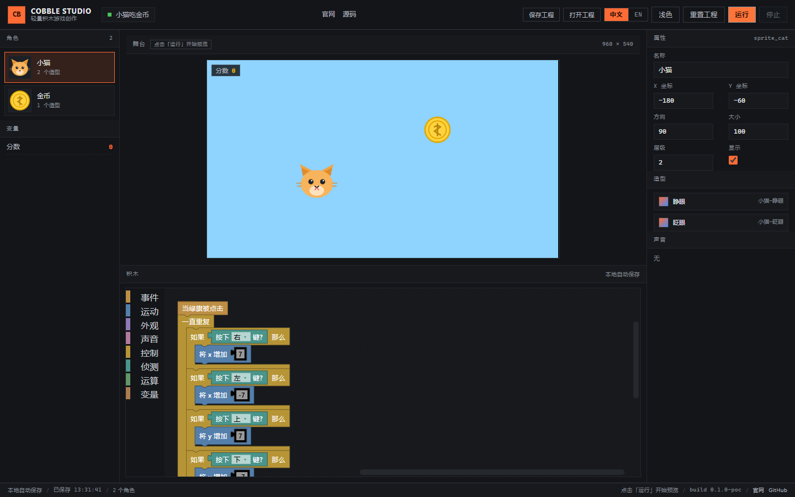
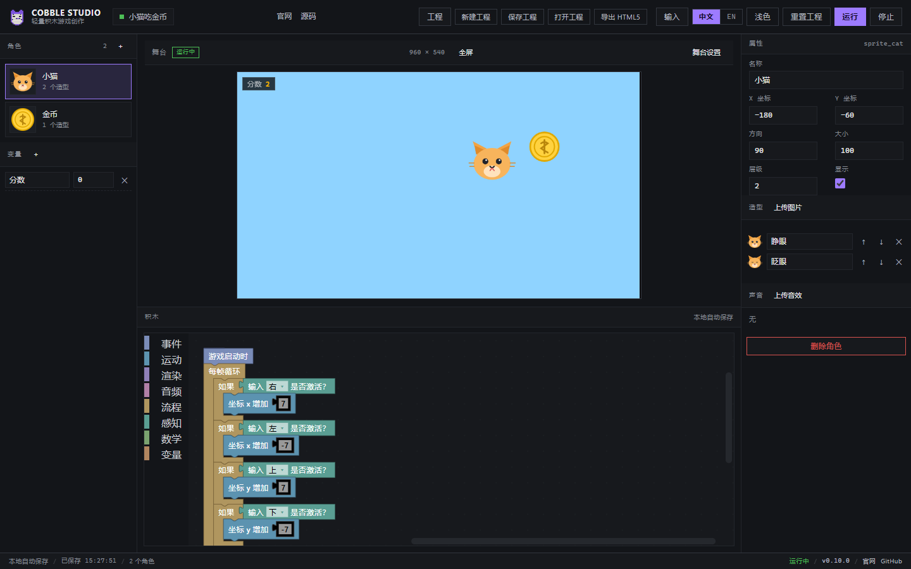
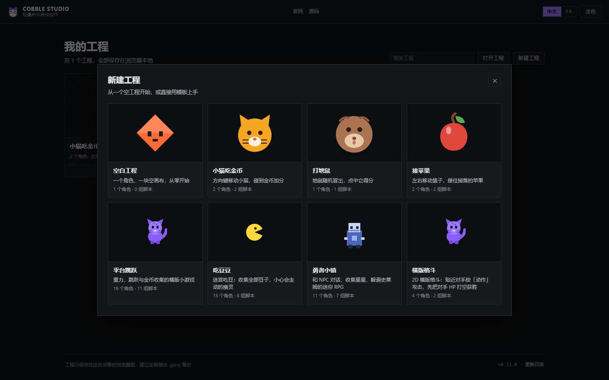
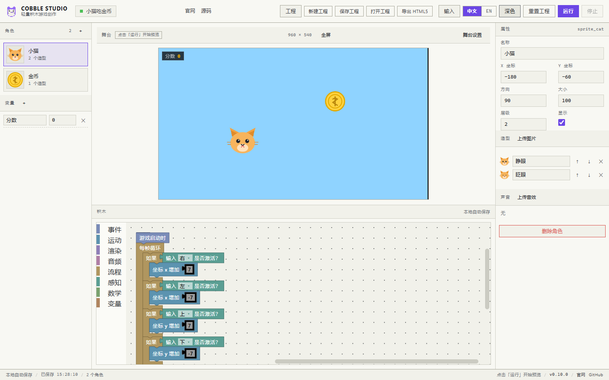
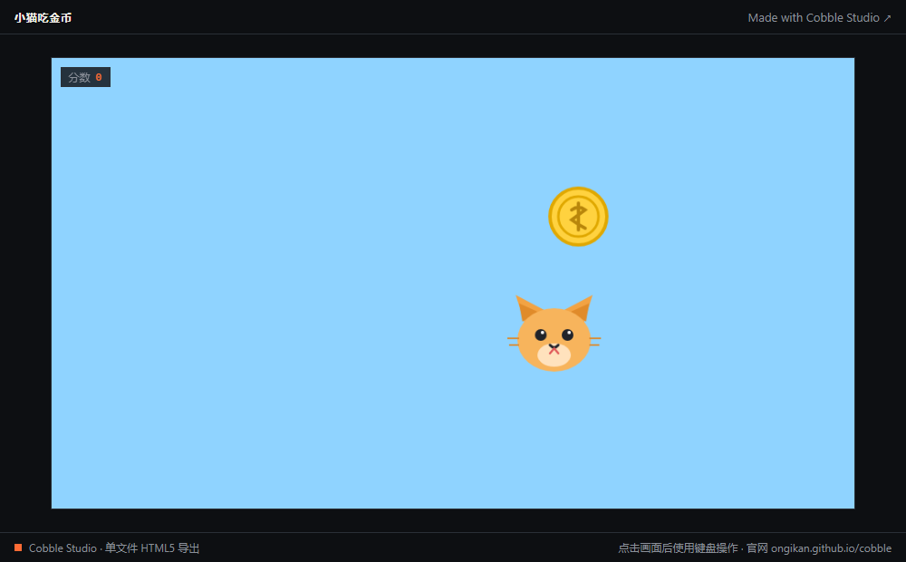
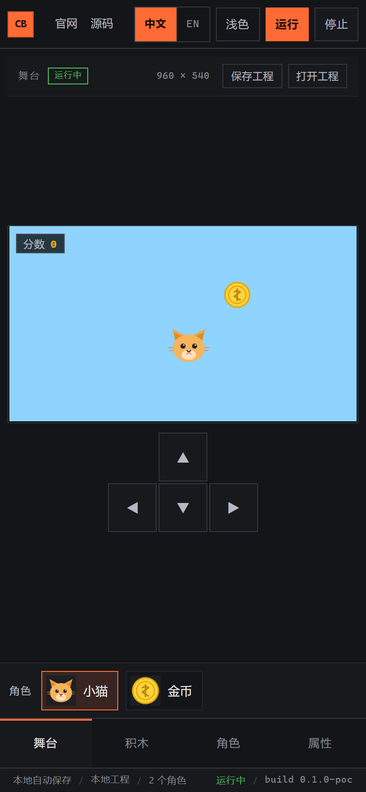
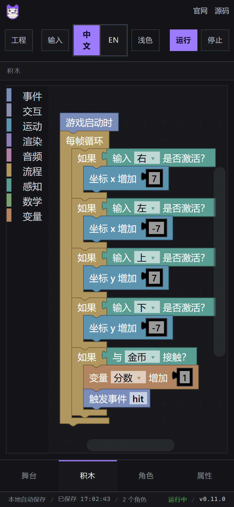

01
积木编程Block programming
43 种积木覆盖事件、运动、外观、声音、控制、侦测、运算与变量，Blockly 工作区直接编译为引擎无关的 IR。 43 blocks across events, motion, looks, sound, control, sensing, operators and variables — compiled from Blockly into an engine-agnostic IR.
P0 · M0 可运行原型P0 · working M0 prototype
轻量、跨端的积木游戏创作平台。拖积木 → 编译成运行时指令 → 立刻在浏览器里试玩。桌面、平板、手机都能用。 A lightweight, cross-device block-based game maker. Snap blocks, compile to runtime instructions, play right in the browser — on desktop, tablet and phone.

Features
从第一块积木到能玩的作品，尽量少的概念、尽快的反馈。 Few concepts, fast feedback — from the first block to a playable game.
01
43 种积木覆盖事件、运动、外观、声音、控制、侦测、运算与变量，Blockly 工作区直接编译为引擎无关的 IR。 43 blocks across events, motion, looks, sound, control, sensing, operators and variables — compiled from Blockly into an engine-agnostic IR.
02
舞台内嵌 Phaser 4 运行时，点「运行」立刻试玩；同一套运行时也被打进「导出 HTML5」的单文件里。 A Phaser 4 runtime is embedded in the stage. Hit Run to play immediately — the same runtime is bundled into the single-file HTML5 export.
03
触屏布局自动切换：底部标签页、屏幕方向键、角色快捷条；粗指针设备才显示方向键，桌面保持三栏。 Touch layout switches automatically: bottom tabs, on-screen D-pad, quick sprite strip. The three-column desktop layout stays untouched.
04
全站零圆角，积木使用自定义渲染器压平圆角与顶帽，走低饱和配色，长时间编辑不刺眼。 Zero border radius everywhere. A custom Blockly renderer flattens corners and hats, with a muted palette for long editing sessions.
05
界面文案全部走 i18n，积木与工具箱跟随语言；作品内的角色名、变量名属于内容，不随界面翻译。 Every UI string is an i18n key; blocks and toolbox follow the locale. Sprite and variable names are content and are never translated.
06
无需登录，编辑内容自动保存到浏览器；账号、云端与社区分享在路线图中，当前不依赖任何后端。 No sign-in. Work is autosaved in the browser. Accounts, cloud and community sharing are on the roadmap; today there is no backend.
Screens






窄屏自动切成单栏：底部「舞台 / 积木 / 角色 / 属性」四标签，舞台页带方向键与角色快捷条，横屏时舞台与方向键并排；积木编辑器支持双指缩放。 Narrow screens collapse into a single column with four bottom tabs (stage, blocks, sprites, props), an on-screen D-pad and a sprite strip; landscape puts the stage next to the D-pad, and blocks support pinch zoom.
Roadmap
积木编辑 → 编译 → 运行 → 保存工程 → 素材与角色管理 → 模板与新建工程 → 单文件导出全部可用；稳定版收尾后打桌面 / 安卓安装包。 Edit → compile → run → save → asset editing → templates & new project → single-file export all work. Desktop / Android packaging follows the stable release.
积木编辑、IR 编译、固定 60Hz 解释器、Phaser 4 舞台、深浅主题、中英切换、触屏布局、本地自动保存。 Block editing, IR compiler, 60 Hz fixed-step interpreter, Phaser 4 stage, themes, locales, touch layout, autosave.
保存/打开工程，积木脚本随文件带走；桌面顶栏与手机舞台页都有入口，打开后立刻可继续编辑。 Save and open projects with their block scripts. Entry points on desktop and mobile; editing resumes right away.
上传图片与音效，新建/删除角色，造型可改名与排序，变量与舞台背景、尺寸都能在编辑器里调整。 Upload images and sounds, add or delete sprites, rename and reorder costumes, edit variables plus stage background and size.
一键把工程编译成运行时指令，连同播放器与素材内联成一个 HTML 文件：双击即玩、离线可用，文件里带变量 HUD 与官网链接。 One click compiles the project into runtime instructions and inlines the player plus assets into a single HTML file — double-click to play offline, with HUD and a link back home.
新建工程弹层：空白工程，加上小猫吃金币、打地鼠、接苹果三个可玩模板，选完直接进入编辑。 New-project dialog with a blank project plus three playable templates (cat & coins, whack-a-mole, catch apples) — pick one and start editing.
平台跳跃、吃豆人、RPG、横版格斗四款完整示例游戏，打磨到能直接当模板用。 Four complete demo games (platformer, Pac-Man, RPG, fighting), polished enough to ship as templates.
稳定版之后把编辑器装进 Tauri 桌面壳与 Capacitor 安卓应用，离线也能用。 After the stable release, ship the editor as a Tauri desktop app and a Capacitor Android app.
克隆、列表、自定义积木，精确像素碰撞；之后是账号、云端保存与作品社区。 Clones, lists, custom blocks, pixel-perfect collision — then accounts, cloud saves and a community gallery.
Get started
需要 Node.js 20+。不需要后端，不需要登录。 Requires Node.js 20+. No backend, no sign-in.
git clone https://github.com/ONGIKAN/cobble.git
cd cobble
npm install
npm run dev # http://127.0.0.1:5183